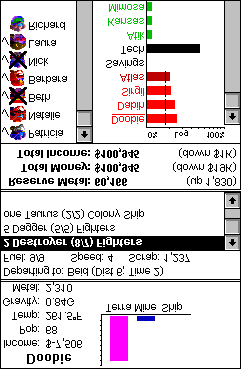

Informations sur le budget

Les nombres des informations sur le budget sont là uniquement à titre informatif. Vous ne pouvez pas les modifier directement. (Même si ce serait agréable de se dire : « Tiens, je vais me donner un peu plus d’argent ! ») Ce que vous pouvez modifier, c’est le graphique en barres qui se trouve en dessous.
Les barres
Les commandes les plus importantes de Spaceward Ho! sont vos barres. C’est avec elles que vous répartissez vos dépenses et que vous mettez en œuvre votre stratégie. Contrairement aux ennuyeux graphiques en barres que l’on voit sur les transparents des présentations d’entreprise, vous pouvez réellement modifier les barres de Spaceward Ho!
Par exemple, le graphique en barres des informations sur le budget sert à répartir votre argent entre chacune de vos colonies. Vous pouvez aussi en consacrer une partie à la recherche technologique, et en garder une partie pour plus tard. Plus la barre à droite du nom d’une planète est grande, plus grande est la part de votre budget total qui ira à cette planète. Cliquer et faire glisser la souris dans le graphique allonge ou raccourcit la barre jusqu’à l’endroit où vous avez cliqué, en ajoutant ou en retirant de façon proportionnelle aux autres barres.
Ainsi, pour dépenser la même somme pour la technologie et pour votre planète, cliquez et faites glisser directement sur la barre de technologie. En déplaçant la souris, vous verrez la barre de technologie monter quand les autres descendent, et descendre quand les autres montent. Réglez-la pour que la barre de technologie et la barre de colonie aient la même longueur. Vous pouvez faire la même chose en faisant glisser la barre de la planète. À vous de choisir.
Les barres des informations sur le budget peuvent se décomposer en barres plus petites. Par exemple, cliquez sur le mot « Technologie » dans la fenêtre du budget. La fenêtre de technologie s’ouvre. C’est une vue détaillée et précise de vos dépenses en technologie. Autrement dit, elle subdivise l’argent que vous dépensez en technologie dans la fenêtre du budget. Nous vous en dirons plus sur la fenêtre de technologie plus loin.
L’épargne, c’est l’argent mis de côté jusqu’au tour suivant. L’argent est aussi épargné automatiquement si vous ne le dépensez pas. Par exemple, si vous dépensez tout votre argent sur une planète pour la construction de vaisseaux, mais qu’aucun vaisseau n’est en file d’attente là-bas, l’argent sera gardé pour plus tard. Chaque fois que de l’argent est épargné ainsi, vous en êtes informé par un message. En général, ce n’est pas une mauvaise idée d’avoir de l’argent de côté pour les mauvais jours. Votre épargne vous rapporte des intérêts, comme à votre banque. Vous dépensez l’argent épargné simplement en cessant de l’épargner.
Si une planète a besoin d’argent rien que pour survivre, vous verrez un trait noir dans la barre, comme celui près d’Okda dans l’exemple. Ce trait montre le minimum dont la planète a besoin. Seule la somme au-dessus de ce trait contribue réellement au développement de la planète : il est donc judicieux de dépenser largement au-delà du minimum.
Informations sur la planète
Les informations sur la planète actuellement sélectionnée (celle qui est entourée d’une « auréole ») s’affichent dans le coin supérieur gauche de la fenêtre principale. Si la planète sélectionnée est une planète que vous avez colonisée, vous verrez probablement un graphique en barres qui montre comment l’argent que vous dépensez pour cette planète sera réparti entre l’extraction, la terraformation et la construction de vaisseaux. Là encore, ne vous souciez pas trop du pourcentage exact que vous dépensez pour chaque poste ; essayez simplement d’avoir les bonnes proportions.
Dépenser de l’argent en terraformation aide à ramener la température d’une planète à 72°. (C’est votre température préférée.) Si une planète est déjà à 72°, vous ne pourrez plus dépenser d’argent pour la terraformer.
Dépenser de l’argent en extraction permet d’extraire une partie des ressources en métal de la planète, rendant le métal disponible pour la construction de vaisseaux. Là encore, quand la planète n’a plus de métal, vous ne pourrez plus dépenser d’argent pour l’exploiter.
Quand vous voulez construire des vaisseaux, il ne suffit pas de dépenser de l’argent en construction de vaisseaux sur une planète. Vous devez encore dire à Spaceward Ho! quel genre de vaisseaux vous voulez construire. Nous y reviendrons plus loin.
Le « revenu » d’une planète est la somme supplémentaire qu’elle apporte à votre budget total. Si c’est une planète que vous venez de coloniser, il sera négatif, ce qui signifie que vous devez y injecter de l’argent rien que pour la maintenir en vie. Plus une planète ressemble à votre planète d’origine (qui est à 72° et 1,00 G), plus elle a de potentiel pour rapporter de l’argent. Une planète à potentiel ne commencera pourtant à rapporter qu’une fois qu’elle sera très peuplée. Les planètes trop différentes de votre planète d’origine ne seront jamais rentables.
Quand vous avez fini de terraformer ou d’exploiter une planète, la barre correspondante passe automatiquement à zéro et vous ne pouvez plus la modifier. Si une planète que vous possédez a été entièrement exploitée et terraformée, la seule chose pour laquelle l’argent alloué à cette planète peut être dépensé est la construction de vaisseaux. Plutôt que de vous montrer un graphique en barres désormais inutile, cet espace est donc rempli par la liste des vaisseaux en cours de construction.
Traduction française du remake, non officielle, du manuel de Delta Tao. La page en anglais (en anglais).